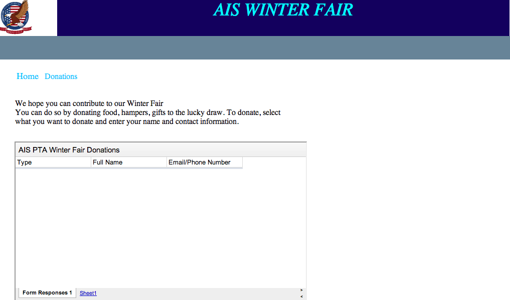

Planning our subpages
Sub-Pages
- Sub-Page Template
- Sub-Page Prize corner
- Sub-Page Donations (including food, money, hamper donations)
- Sub-Page Set up (only include times)
Sitemap
- 1. Homepage
- Sub-Page Prize corner
- Sub-Page Donations (including food, money, hamper donations)
- Sub-Page Set up (only include times)
Subpages
Donation Subpage

Setup Subpage
 Prize Corner Subpage
Prize Corner Subpage
Wireframe
Feedback
The contact bar on the bottom is not really used because parents what to see it right away
not have to find it.
Template brainstorming


Look and Feel
The message of our website giving out overall is that we want
the audience, parents, to look at it and feel connected with
their children which leads them to sign up and volunteer for the winter
fair.
Homepage
Feedback from myself
- newsbar is not really needed.
- There is a logo word on the side of the picture, need to be deleted
- Need to get and properly link AIS logo from group mates.
Feedback by others
- Excellent planning: very organised
- Color contrast is VERY bad
- Functional, but the website could be more organised